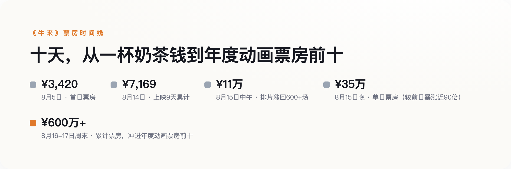

导语
8月5日，一部叫《牛来》的国产3D动画电影在全国院线"裸映"——没有预告片，没有路演，只有一张水墨海报。首日票房3420元，上映9天累计7169元，单日最低188元，排片一度全国仅剩6场，几乎要在无人注意中直接下映。8月14日前后，一段"烂到极致"的观影实拍片段在社交平台传开，8月15日排片回升、票房破十万，8月16日单日票房冲上378万元，累计突破500万元，周末过后滚到600万元以上；片名"牛来"被股民谐音成"牛市来"，同花顺热股榜上金牛化工、公牛集团、铜牛信息三只跟电影毫无业务关联的股票同时上榜。这条新闻多数版本讲的是"审丑经济有多离谱""股民有多疯"，默认这部片子能合法上映本身不是问题，只关心它为什么火——但一个更前置的问题被漏掉了：一部完成度远低于行业及格线的动画片，是怎么拿到公映许可证、堂而皇之走进全国院线的？
一、票房的过山车：从一杯奶茶钱到500万
8月5日首映当天，《牛来》票房3420元；上映前9天累计7169元，到第10天（8月14日）也只涨到7705元左右，观影人次236，单日最低时只卖出188元的票，排片一度萎缩到全国6场，比大多数三四线城市一家影院单日的员工餐补还低。真正的转折发生在8月14日前后：一段观众实拍的观影片段在社交平台突然传开，"烂到极致"变成一句可以转发的评价，围观从线上迁移到线下。8月15日中午，票房破11万，排片涨回600多场；当天傍晚，单日票房冲到35万元，比前一日（8月14日单日票房约3900元）暴涨近90倍。第二天，也就是8月16日下午，单日票房突破378万元，累计过450万，当晚滚到500万以上，挤进2026年国产动画票房榜前十；周末结束时，累计票房超过600万元，猫眼专业版给出的最终预测是1837万元。

十天之内，这部片子完成了从"卖不出一份外卖钱"到"跻身年度动画票房前十"的转向，全靠一个词——"烂"。网友截图里流传的具体吐槽包括：人物动作僵硬到像二十年前的电脑游戏，场景穿模频发，配音口型对不上，宣传海报上的水墨国风在片中完全找不到踪影，被讽为"海报诈骗"。豆瓣上一条高赞短评写道："烂得难以置信！也算开眼了！"——某种程度上，这条短评比任何专业影评都更接近这部片子真正的传播逻辑。观众买的不是一张电影票，是一次可以截图发朋友圈的"打卡权"。
二、"裸映"不是营销鬼才，是走投无路
多数报道都强调这是"零宣发"，但零宣发背后是什么，很多版本语焉不详，甚至暗示这是一次精心策划的反向营销。真实情况更朴素：导演信雨萌是发行方的熟人朋友，发行方看到成片后一度劝她别上院线，最后是"好不容易做出来了，帮她上一下"才走了发行流程。全片从导演、制片、配音到剪辑、建模，几乎由信雨萌一人完成——这是她的第一部作品，出品公司大连璟园文化影视传媒此前的身份是一家装饰工程公司，2021年才更名转型进入影视行业，注册资本10万元，2025年参保员工只有1人。唯一的宣传物料是一张水墨风海报，没有预告片、没有路演、没有主创采访。
把"裸映"简单等同于"营销策略"，忽略了这背后有两种完全不同的动机：一种是对内容有底气、故意省宣发费；另一种是团队规模和资金实在撑不起宣发，能上院线已经是极限。《牛来》属于后者。这个区分很重要，因为下一节要讲的问题——过审——恰恰不关心一部片子是主动裸映还是被动裸映，它只关心几件和"好不好看"完全无关的事。
三、技术审查这道关卡，从来不查"好不好看"
中国电影的技术审查，查的是放映安全——坏帧、音画不同步、黑屏、解码故障这类会让影院出放映事故的问题，不审查制作质量本身。只要内容不违规、手续齐全，就能拿到公映许可证。《牛来》剧本备案编号影动备字〔2021〕第104号，这只是立项备案；2024年通过技审拿到的电审动字〔2024〕第33号，才是真正意义上的公映许可证——流程完全合规。虎嗅一篇评论对这一点的概括很准："它最大的悲哀不是烂，是烂得理直气壮，烂得符合流程，烂得挑不出程序上的错。"
这套"不问质量"的逻辑，不只留在放映技术审查这一个环节——题材导向的财政补贴审批，同样不把制作质量当硬门槛。2010年上映的3D动画《雷锋的故事》可以作为对照坐标：官方公布制作成本2100万元，画面质量同样崩坏，却因为贴合红色题材、登陆央视播出，顺利拿到了按票房/排片分级发放的"阶梯补贴"。真正该被警惕的从来不是"烂片能不能过审"这件事本身，是"烂片能不能靠合规这道口子去套取和电影质量毫无关系的其他利益"。《牛来》本身不具备这种套利结构——单人小微企业，没有外部资本介入，也没有复杂的关联公司网络，这次更接近意外爆红，不是刻意的资本操作。但这类制度留白，才是比这一部片子更长期存在的风险。
四、裸发不是公式，《功夫女足》证明了另一种可能
如果把"零宣发"直接总结成一条可复制的营销公式，会漏掉一个反例。同期上映的《功夫女足》同样走"裸片空降"路线，上映前5天才官宣定档，没有铺天盖地的路演，靠的是导演个人品牌和观众对内容的信任自发传播——结果是首日排片占比76.8%，上映27分钟票房破亿。同样是"裸"，《牛来》是被动无奈，《功夫女足》是主动自信，票房结局天差地别。但两者有一点完全一样：无论主动裸发还是被动裸映，走的都是同一套只看流程合规、不看内容质量的技术审查——审查不会替市场做二次筛选，真正筛出天差地别结局的，是市场自己。
五、下次看到"烂片意外爆红"，先查一下过审记录
片名谐音"牛市来"带火三只毫无业务关联的"牛"字股，不是新鲜事——2016年和2024年，特朗普两次当选总统，"川普"谐音股川大智胜都应声上涨，这类谐音炒作在A股是有传统的"流派"。财经评论员郭施亮提醒，这种依靠情绪炒作的行情持续性极弱，股价终将回归真实价值，盲目追高风险不小。这条线足够抓眼球，但它不是这次事件里最该被记住的部分。
东方财富证券研究所副所长陈果的一句话点出了更深一层的东西："当精致遍地时，粗犷也就成了猎奇；当AI遍地时，'不含AI'反而大放异彩。"这句话解释的是观众为什么愿意为一部烂片买单，但解释不了另一个更前置的问题：如果没有过审这道门槛先放行，再多猎奇心理也变不成一张电影票。下次再看到"烂片意外爆红"的新闻，别急着感叹观众审丑或者股民疯狂，先问一句——它是怎么通过技术审查、堂而皇之走进全国院线的，这个流程漏洞，明天还会不会被更多人复制。